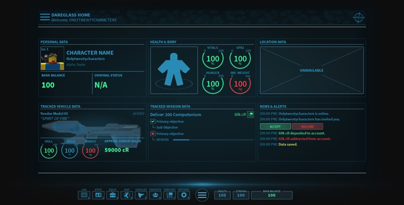

UPDATE ARTICLE
ISSUE 2
Meridian Studios is a team of people on the Roblox
Platform creating a large data persistant universe,
we hope you enjoy the read!

Due to changes in upcoming and unforeseen events, the Update Article was placed on standby. However, the team wanted to reintroduce it. Over the past month, many new updates were put out, and many more are looking to be added in the near future for both Expanse and Skirmisher, along with a change to the format of the Update Article due to feedback from the previous.
From Concept to Creation
Section 1
Along with the addition of these four new ships, one of the builders, Galvarino, has provided some insight into his process.
Galvarino works on his ships using Fusion 360, a 3D modeling program provided by Autodesk.
He currently has the most ships in the game at a count of 10, including the newest addition of the Victe. Of his 10 ships, many of them are quite unique to the Expanse universe and can be seen in many of our in-game screenshots as the shape is very geometric and gives a good silhouette.
According to Galvarino, “My process for making ships begins with finding a concept or creating one myself… [I’ll] construct the body of the ship and tackle the more difficult tasks one by one in small pieces.”
Recently, Galvarino has created a video of his creation of a ship, and an insider look to his process of creating. It’s been sped up 1000% to make it bit less tedious to watch, although you get a good general idea of what he stated before in the process.

The DareGlass Integration
Section 2
DoubleDog_DareMe has been one of the largest contributors to Expanse’s well-being and there could be no other way Meridian would want it. Through his humor, seriousness, and art direction, no other member could fit the team better. He has been with Meridian since March of 2017 and has worked on almost all of the UI elements in-game except for the few icons created by ZiggiousZaggious.
However, before joining the team he worked as a builder and joined in on small odd jobs creating maps for games such as Strobe. DoubleDog only started working with UI and HUD in early 2017, working on a helmet interface which he showed to the leads, AlexiRyaov and AlexanderKotevski.
“They practically hired me on the spot,” DoubleDog said.
DoubleDog does a lot of his work in studio, but he also works with external programs. He uses a touchpad and pen to help draft out his work. His use of Photoshop Elements 6, Paint.NEt and Gimp 2 all come together to help draft out his work on the UI, but most of it is created in studio. DoubleDog doesn't use any studio plugins, however, because of the lack of useful ones for what he does.
“To be honest, there aren't any truly useful GUI plugins other than nine-slice, and I don't even have a use for that one either, so I don't use any of them,” DoubleDog said.
Expanse hasn’t seen much love in past months in terms of updates due to Meridian pushing to get Skirmisher released. However, one of the biggest contributions to Expanse has been the UI. Just like Skirmisher, Expanse has gone through multiple iterations of the interface and each time becoming more and more useful and looking twice as good as the previous.

“I think the DAREGlass has had more iterations than Skirmisher, and it’s definitely not easy to design something that people would be using essentially all the time,” said DoubleDog when speaking on his process of the DAREGlass updates.
The update to the Expanse UI has been a surprise to some of the team members, but overall it’s been a good surprise. A new look really gives us a good feeling for the new upcoming year. The update was shown with a basic outline of what the DAREGlass would hold in terms of information, and the way it handles it.
“DAREGlass is very similar to the MobiGlas, and for good reason- they spend millions of dollars trying to make the best UI they can make, so the lessons they learn trickle down to us when we take the time to analyze what they do and why they do it,” explained DoubleDog.